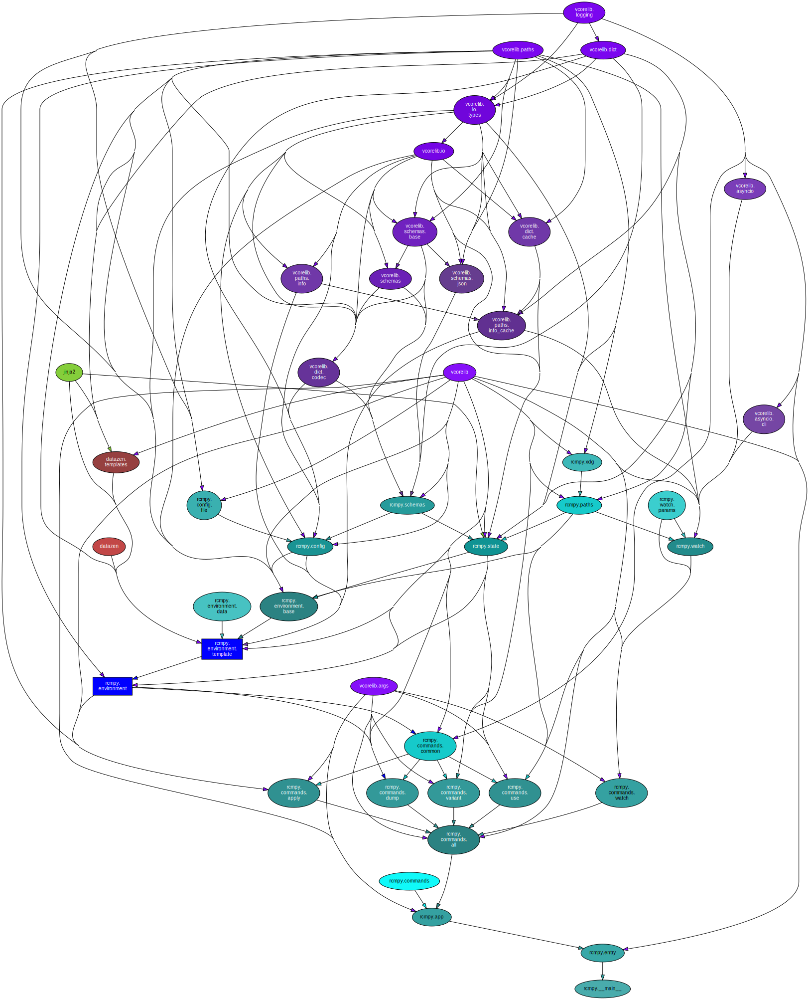

rcmpy (1.5.9)#


A configuration-file management system.
Consider sponsoring development.
Python Version Support#
This package is tested with the following Python minor versions:
Platform Support#
This package is tested on the following platforms:
ubuntu-latestmacos-latestwindows-latest
Introduction#
This project aims to simplify management of user configuration files, user (or system-wide) package installations, system settings and more on a variety of platforms.
Reasons to use it:
Simplify bootstrapping a fresh system to a “developer workstation” in as few steps as possible
This can be a simpler options for teams or individuals who don’t have infrastructure to manage system-install images, system-distribution build systems, other kinds of provisioning automation, etc.
Normalize software configurations for a team of developers, but still allow personalized overrides when desired (e.g. text-editor or terminal configs)
This can help make your team or organization’s development environment more approachable to new or inexperienced developers (ask yourself this: are the code changes usually even the hard part?)
Relies on a minimal data repository that can be managed with version control, shared by multiple people, open source to provide examples to the community, etc.
This enables a workflow for adding, removing, updating and re-configuring software used by a project-ecosystem over time
Getting Started#
This package attempts to adhere to the
XDG Base Directory Specification.
It keeps stateful formation that needs to persist between command invocations
in a rcmpy sub-directory of the user-state directory controlled
by XDG_STATE_HOME (or the default: $HOME/.local/state).
One tracked piece of stateful information is the location of the current
data repository. If this is not changed (via the use
command), it checks a rcmpy/default sub-directory in the
user-config directory controlled by XDG_CONFIG_HOME (or the default:
$HOME/.config).
System Requirements#
It is assumed that the system has a Python executable and pip is available to it as an installed package (can be checked with:
python[3][.exe] -m pip --versionorpip[3][.exe] --version).A mechanism to obtain a data repository via a network connection, if one won’t be created from scratch (e.g. a git client).
Installation and Setup#
Install the package with
pip[3][.exe] --user rcmpyorpython[3][.exe] -m pip --user rcmpy.Test that
rcmpyis now a shell command withrcmpy --version.If not, you may need to invoke
rcmpydirectly from$HOME/.local/binor%APPDATA%\Python. (see the pip documentation for more info).
Run
rcmpy useto view the default data repository location (printed to the console):
$ rcmpy use
rcmpy.state - INFO - Using directory '/home/vkottler/.config/rcmpy/default'.
Begin setting up your data repository in this location, or:
Download (or
git clone) one to that default location.Create a symbolic link at that location, pointing to one.
Run
rcmpy use <path>to pointrcmpyat an existing one at any arbitrary location.
Run
rcmpy applyto perform tasks specified in the top-level configuration file.
Command-line Options#
$ ./venv3.14/bin/rcmpy -h
usage: rcmpy [-h] [--version] [-v] [-q] [--curses] [--no-uvloop] [-C DIR]
{apply,dump,use,variant,watch,noop} ...
A configuration-file management system.
options:
-h, --help show this help message and exit
--version show program's version number and exit
-v, --verbose set to increase logging verbosity
-q, --quiet set to reduce output
--curses whether or not to use curses.wrapper when starting
--no-uvloop whether or not to disable uvloop as event loop driver
-C, --dir DIR execute from a specific directory
commands:
{apply,dump,use,variant,watch,noop}
set of available commands
apply apply any pending changes from the active data
repository
dump dump template data to stdout as JSON
use set the directory to use as the rcmpy data repository
variant set the variant of configuration data to use
watch do a task whenever a file in a specified directory
changes
noop command stub (does nothing)
Sub-command Options#
apply#
$ ./venv3.14/bin/rcmpy apply -h
usage: rcmpy apply [-h] [-f] [-d]
options:
-h, --help show this help message and exit
-f, --force whether or not to forcibly render all outputs
-d, --dry-run whether or not to update output files
dump#
$ ./venv3.14/bin/rcmpy dump -h
usage: rcmpy dump [-h]
options:
-h, --help show this help message and exit
use#
$ ./venv3.14/bin/rcmpy use -h
usage: rcmpy use [-h] [-d] [directory]
positional arguments:
directory the directory to use
options:
-h, --help show this help message and exit
-d, --default sets the directory back to the package default
variant#
$ ./venv3.14/bin/rcmpy variant -h
usage: rcmpy variant [-h] [-d] [variant]
positional arguments:
variant new variant to use
options:
-h, --help show this help message and exit
-d, --default sets the directory back to the package default
watch#
$ ./venv3.14/bin/rcmpy watch -h
usage: rcmpy watch [-h] [-p POLL_RATE] [-s] [-i] [-n] directory cmd [cmd ...]
positional arguments:
directory directory to watch for file changes
cmd command to run
options:
-h, --help show this help message and exit
-p, --poll-rate POLL_RATE
poll period in seconds (default: 0.1s)
-s, --shell set to run a shell command
-i, --single-pass only run a single iteration
-n, --no-change don't act on changed files, only the overall set of
files changing (added or removed)
Internal Dependency Graph#
A coarse view of the internal structure and scale of
rcmpy’s source.
Generated using pydeps (via
mk python-deps).
